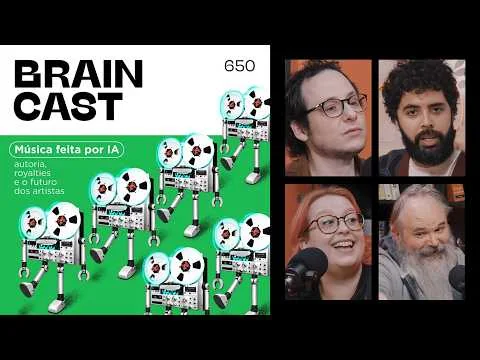

Episódio que discute autoria, royalties e o futuro dos artistas diante de ferramentas de inteligência artificial que colaboram com a criação ou entregam obras prontas. A conversa passa por Suno, ferramentas de estúdio, formação de novos músicos, direitos autorais, acordos com gravadoras e a diferença entre usar IA e terceirizar todo o processo criativo.
Acessar fonte original ↗